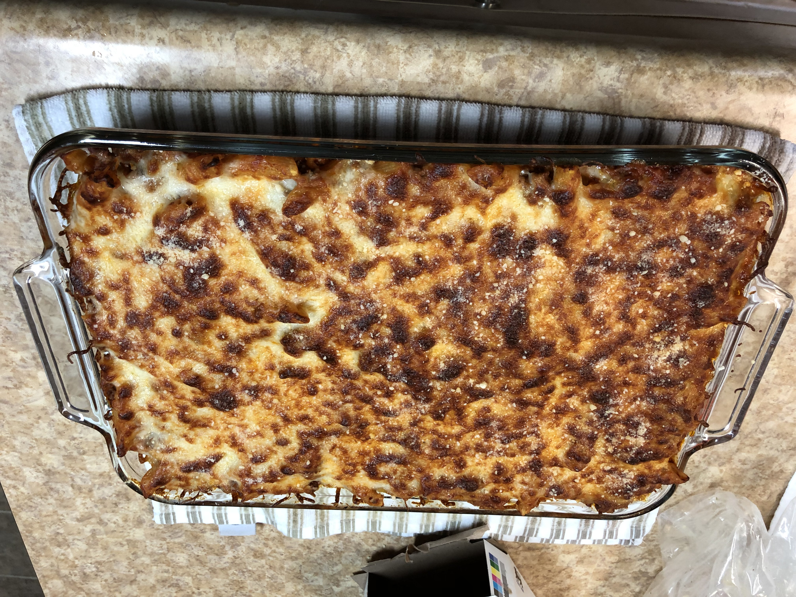

Baked Ziti

How its made!
- Hamburger
- Penni Ragetti (pleasing to look at)
- Ragu Chunky Garden Vegetable (or your favorite)
- Garlic Powder
- Onion Powder
- Southwest Seasoning
- Cajun Seasoning
- Italian 5 blend Cheese
- Brown and season hamburger
- Boil nudes
- Mix sauce nudes and burger together and bring to a bubbling
- Stir often to ensure through heating
- Fill half glass pan with mixture
- Layer with cheese
- Fill with remaining mixture
- Layer top with cheese
- Bake for 20 to 25 mins (I brown my top cheese, turning the pan to brown evenly)
- Let rest for 5 minutes, then enjoy!